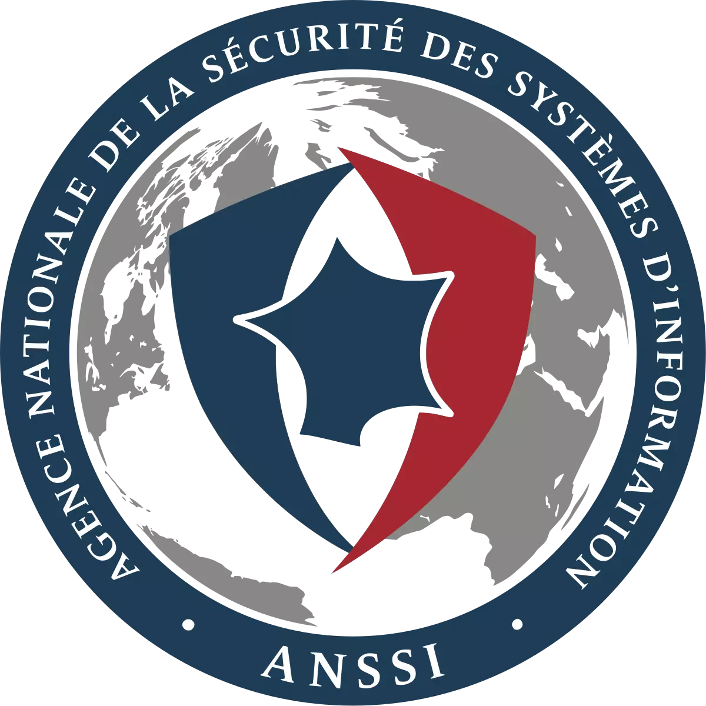
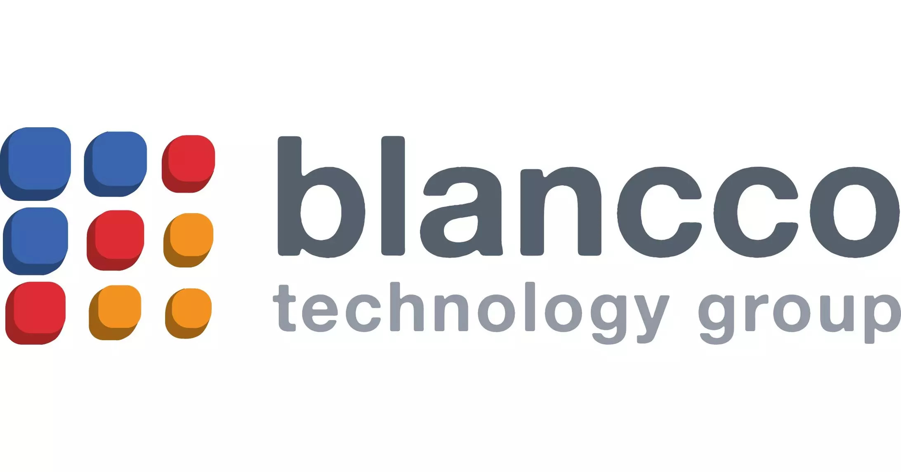
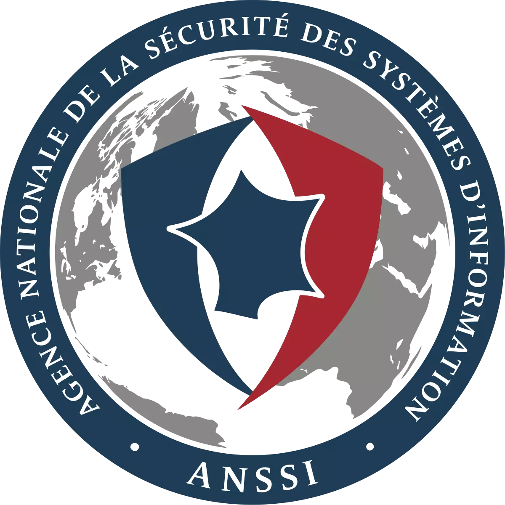
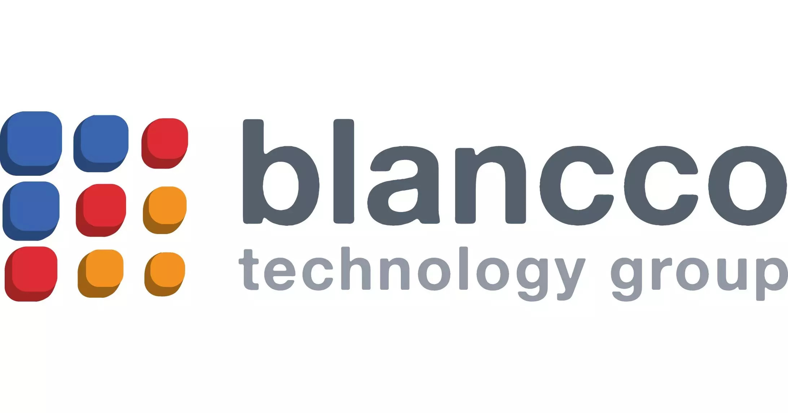

Notre activité principale s'axe autour de trois métiers :
La Capsule fait partie d'une fédération régionale de reconditionneurs voir -> OGO
Ceci permet de répondre aux besoins des grandes entreprises, comme des institutions.
Nos équipements nous permettent de répondre aux besoins les plus fréquents en matière
de logistique. Nous pouvons nous déplacer dans tout le Finistère ainsi que dans l'ensemble de la
région Bretagne grâce à notre propre parc de véhicules ou ceux de nos partenaires.
De l'inventaire à la palletisation, nous assurons une traçabilité sans faille et un
transport optimisé. Notre équipe composée de 5 jeunes et deux encadrants peut
être complétée par des salariés de notre deuxième chantier, poussant nos effectifs à 12.
Organisation de la procédure logistique ( réception / livraison)
- Enlèvement de lots informatiques chez un fournisseur
- Collecte multi-sites
- Réception de lots via un transporteur
- Livraison de matériels
- Évacuation vers recycleur ou déchetterie
Le chantier d’insertion numérique a défini des techniques et outils pour l’association
Goupil, qui peut à présent proposer plusieurs protocoles de reconditionnement de matériel,
d’effacement et de récupération de données.
Des unités centrales aux portables, en passant par le matériel réseau et les serveurs,
La Capsule effectue depuis plusieurs années des prestations de reconditionnement.
Notre expérience en matière de harware nous amène à pouvoir conseiller les sociétés
et institutions au mieux, notamment dans les différents types de procédures à appliquer
(ex : rénovation du parc, destruction de données...)
Organisation du stockage et de la traçabilité des équipements
- Stockage des lots livrés (dé-palettisation-rangement)
- Stockage du matériel reconditionné : écrans, unités centrales, laptop, claviers, câbles, etc …
- Traçabilité en entrée (stock)
- Traçabilité après diagnostic (évacuer en recyclage / à reconditionner / retour pour réparation)
- Gestion et suivi d'une base de données type GLPI
Organisation et pratique du reconditionnement des équipements
- Préparation de la zone de travail.
- Préparation de la fiche technique de reconditionnement.
- Vérification de l’état du matériel.
- Classification du matériel.
- Reconditionnement du matériel.
- Contrôle final avant remise en stock.
Nos équipes de salariés sont formées au 2d. Elles suivent un cursus composé
d'électronique, des techniques de maintenance matérielle et de solutions software.
Le protocole de reconditionnement a été élaboré par l'équipe technique du chantier.
Le but de ce protocole est d'effectuer une traçabilité irreprochable, un nettoyage
en sécurité et un stockage selon les normes en vigueur.
Apporter un support technique mais aussi permettre à chacun de s'accaparer
les outils numériques est essentiel. Nos machines reconditionnées embarquent des
systèmes Linux (en savoir plus), c'est pourquoi, nous
offrons la possibilité à chacune des personnes qui bénéficient de nos services,
de participer à une remise collective ou individuelle, dans l'objectif qu'elles
puissent effectuer les opérations de base (mail, navigation internet, traitement de texte,
photo, visio...)
Au-delà des remises, chaque personne peut venir prendre des cours personnalisés,
venir effectuer une maintenance de sa machine ou réparer des matériels. Nous
participons à plusieurs programmes (APTIC, CPAM, REPAIR CAFÉ...) mais aussi à
des évènements de type atelier, envers des publics en formation, des écoles ou
encore des entreprises.
La Capsule propose à ses clients des effacements de données par réécriture nommés "shred".
Ce type de protocole empêche toute récupération après formatage et permet de couvrir toutes
les classes de documents sensibles.
De la destruction logicielle à la destruction matérielle, La Capsule entend pouvoir répondre
aux demandes de ses clients en pratiquant des diagnostics en conformité avec les normes en vigueur.
Notre référentiel vous aide à identifier les différentes classes de vos données afin de mieux
comprendre les enjeux et choisir les meilleures solutions.
(Cliquer ici pour en savoir plus)
 


